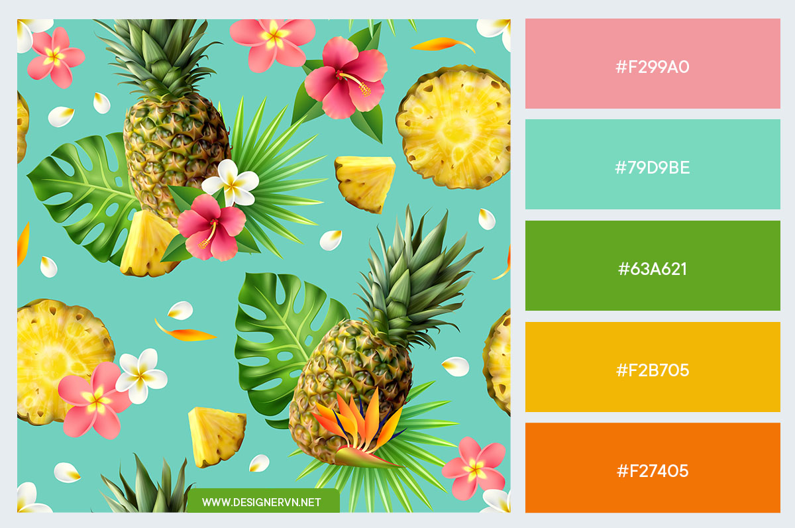

Đố em biết anh đang nghĩ gì ?
Tô đậm
Đi đường quyền có gạch ở chân :v
Dẫn hình ảnh ngay trong thư mục:

Dẫn hình ảnh thư mục ngoài:

Dẫn hình ảnh từ link trực tiếp:

Welcome to Facebook :))
Cái này để chia đoạn. それから、日本人は このページを読むことができます。
素晴らしい ですね。私は インーターネッートで 新聞を書くことが ありますか、ほんとうに わかりましたね。

Em vào đời bằng đại lộ còn anh vào đời bằng lối nhỏ
Anh nhớ mình đã từng thổ lộ, anh nhớ rằng em đã chối bỏ
Anh nhớ chuyến xe buổi tối đó, trên xe chỉ có một người ngồi
Anh thấy thật buồn nhưng nhẹ nhõm, anh nhớ mình đã mỉm cười rồi
Anh nghĩ anh cần cảm ơn em, vì những gì mà anh đã nếm trải
Kỉ niệm sẽ là thứ duy nhất, đi theo anh cả cuộc đời dài
Nếu không có gì để nhớ về, anh sợ lòng mình khô nứt nẻ
Hình dung em như là Nữ Oa, có thể vá tâm hồn này sứt mẻ
Anh thường một mình, tìm đến nơi có nhiều cây cối (yeah)
Nghĩ về những ngày tàn, đã trôi qua theo chiều tay với
Cũng chẳng nghĩ nhiều, anh không mong những điều may tới
Vài nỗi buồn đã cũ, sao bỗng nhiên giữa chiều nay mới (Ah)
Anh vẫn thường nghe, thời Trống vắng hay là Kiếp ve sầu
Những giấc mộng non, như tán lá cây xanh biếc che đầu
Tình yêu thật ra đơn giản như là một cái bánh bao chay
Thắp lên lửa nhỏ, hơn là cứ đi tìm hái ánh sao bay
Đường xa quá, lắm lúc thấy mình lẻ loi
Người đã đến, vui đấy, nhưng rồi cũng đi
Chạm lên trái tim thấy cơn mơ còn cháy nồng
Nhiều đêm trắng xoá bay, lòng như có gió đầu mùa (Ay)
Em vào đời từ cao tầng còn anh vào đời từ mái lá
Thế nên những điều anh mong cầu, không bao giờ là thái quá
Những thứ anh làm thường đơn giản, nên không hay được đánh giá cao
Vài người thường ăn hải sản, rồi lại chê bai mùi cá ao
Giống như con người anh, dễ nắm bắt và dễ chịu
Bài hát này không sâu xa, rất dễ nghe và dễ hiểu
Anh không có nhiều lưu ý, anh cảm thấy mình dễ chiều
Đây không phải là nhạc buồn, đây thứ nhạc để chill
Em vào đời bằng náo nhiệt
Anh vào đời bằng âm thầm
Em đi tìm nốt thăng hoa
Lòng anh lại là âm trầm
Em đi tìm lời phố thị
Anh đi tìm tiếng ghi-ta
Em đưa anh vào trong náo nhiệt
Anh lắc đầu và đi ra
Em vào đời bằng vang đỏ
Anh vào đời bằng nước trà
Bằng cơn mưa thơm mùi đất và bằng hoa dại mọc trước nhà
Em vào đời bằng kế hoạch
Anh vào đời bằng mộng mơ
Lý trí em là công cụ còn trái tim anh là động cơ
Em vào đời nhiều đồng nghiệp
Anh vào nhiều thân tình
Anh chỉ muốn chân mình đạp đất
Không muốn đạp ai dưới chân mình
Em vào đời bằng mây trắng
Em vào đời bằng nắng xanh
Em vào đời bằng đại lộ và con đường đó giờ vắng anh
Đường xa quá, lắm lúc thấy mình lẻ loi
Người đã đến, vui đấy, nhưng rồi cũng đi
Chạm lên trái tim thấy cơn mơ còn cháy nồng
Nhiều đêm trắng xoá bay, lòng như có gió đầu mùa
Đường xa quá, lắm lúc thấy mình lẻ loi
Người đã đến, vui đấy, nhưng rồi cũng đi
Chạm lên trái tim thấy cơn mơ còn cháy nồng
Nhiều đêm trắng xoá bay, lòng như có gió đầu mùa
Na-na-na, na-na, na-na-na-na
Na-na-na, na-na, na-na-na-na
Na-na-na, na-na-na-na-na-na-na
Na-na-na-na-na
Na-na-na-na-na-na !!!